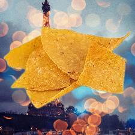

WELCOME TO THE SWEET & SOUR WEB BLOG!
You may be asking, why did I create this blog? The truth is, I already have a blog. So when I created this blog, I thought, "What could make this blog different than Everlything?" And I thought of the title Sweet & Sour blog. And I created the theme food. So this blog is based on food stories, interesting restuarants, with the ocasional other topic.
